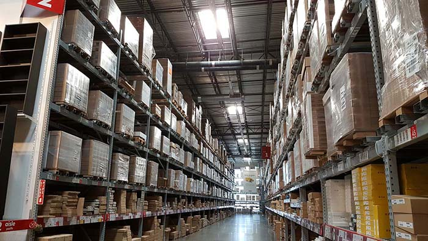
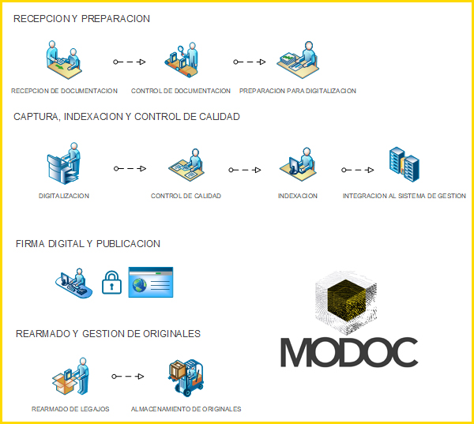

FOREIGN TRADE PSAD (Filing and Digitalization Services Provider)
MODOC is a trusted agent of Customs documentation (PSAD N° 6);
we can digitalize, index, certify
and safekeep custom clearance.
To this end, we have fulfilled all physical,
technological and safety rules required by the Argentine government.
CUSTOM CLEARANCE DIGITALIZATION
A tailor-made service.
OUR SERVICE
The digitalization of custom clearance is one of the services developed by MODOC S.A. to satisfy the demands of the custom sector in compliance with regulation No.: RG2573/09 - RG2721/09 issued by the Public Revenues Administration (AFIP) which standardizes the safekeeping and digitalization of custom clearance for 10 years.
For those clients who require so, the MODOC Logistics Department can use its own vehicles to pick up the documents from their customs agents on a daily basis within the City of Buenos Aires. For the rest of the country, we are partners of one of the largest logistics companies in Argentina which will either pick up the custom clearances or receive them at their agencies.

HOW WE MAKE IT POSSIBLE?
Custom clearances received in our production center are processed within the following 24 hours according to all regulations set by the AFIP. Once prepared and digitalized, clearances are stored in our warehouse for 10 years. Our warehouses comply with all applicable regulations as regards security.
MODOC has a tailor-made software supported by KODAK, by which the users can manage all their foreign trade transactions in a dynamic and easy way.
OUR PROCESS
RECEPTION AND PREPARATION:
Once documents are received, clearances are controlled and organized for further digitalization.
ENTRY, INDEXATION AND QUALITY CONTROL:
The physical document becomes a digital image following defined parameters. Afterwards, files are submitted to a thorough quality control and integrated into the management system to be then linked to certain search criteria to allow their quick finding and traceability.
DIGITAL SIGNATURE AND RELEASE
Once processed, documents are digitally signed and released to be accessed by our clients and the AFIP.
REORGANIZATION AND MANAGEMENT OF ORIGINALS.
Physical documents are reorganized and stored.
